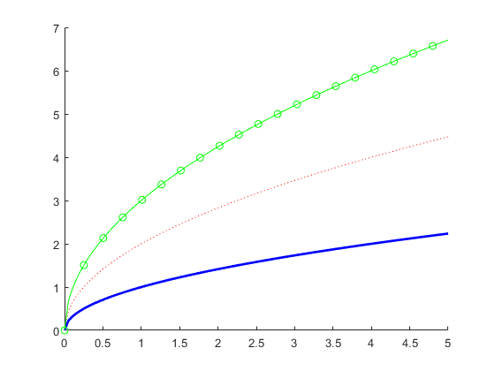
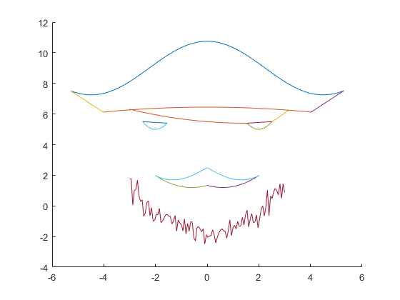
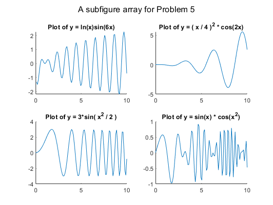

function matrix_ops_plots
problem_1
problem_2
problem_3
problem_4
problem_5
end
function problem_1()
A = [2 3 2 ; 3 4 3];
B = [1 4 1 ; 5 8 5];
add_A_B = A + B
sub_B_A = A - B
elemult_A_B = A .* B
mult_A_Bprim = A * B'
end
function problem_2()
A = [5 4 3 ; 6 5 4 ; 7 8 7];
B = [5 ; 6 ; 8];
x1 = A \ B
x2 = B' / A
end
function problem_3()
figure
hold on
x = linspace(0, 5, 100);
y1 = sqrt(x);
plot(x, y1, 'Color', 'b', 'LineWidth', 2);
y2 = 2 * sqrt(x);
plot(x, y2, 'LineStyle', ':', 'Color', 'r');
y3 = 3 * sqrt(x);
plot(x, y3, 'Color', 'g', 'Marker', 'o', 'MarkerIndices',1:5:length(x));
end
function problem_4()
figure
hold on
x1 = linspace( (-5 * pi) / 3 , (5 * pi) / 3 , 100);
y1 = 1.75*cos(0.7*x1) + 9;
x2 = linspace(-4, 4, 100);
y2 = -0.02*x2.^2 + 6.45;
x3 = linspace(-5.3, -4, 100);
y3 = -1.1*x3 + 1.7;
x4 = linspace(4, 5.3, 100);
y4 = 1.1*x4 + 1.7;
x5 = linspace(1.55, 2.5, 100);
y5 = 2*(x5 - 2).^2 + 5;
x6 = linspace(-2.5, -1.55, 100);
y6 = 2*(x6 + 2).^2 + 5;
x7 = linspace(1.55, 2.5, 100);
y7 = 0.1*x7 + 5.25;
x8 = linspace(-2.5, -1.55, 100);
y8 = -0.1*x8 + 5.25;
x9 = linspace(-3, 1.55, 100);
y9 = 0.045*(x9 - 1.5).^2 + 5.4;
x10 = linspace(2.5, 3.15, 100);
y10 = 0.2*x10.^2 + 4.25;
x11 = linspace(0, 2, 100);
y11 = 0.4*(x11 - 0.6).^2 + 1.2;
x12 = linspace(-2, 0, 100);
y12 = 0.4*(x12 + 0.6).^2 + 1.2;
x13 = linspace(-2, 2, 100);
y13 = -abs(0.8*sin(1.2*x13)) + 2.5;
plot(x1,y1)
plot(x2,y2)
plot(x3,y3)
plot(x4,y4)
plot(x5,y5)
plot(x6,y6)
plot(x7,y7)
plot(x8,y8)
plot(x9,y9)
plot(x10,y10)
plot(x11,y11)
plot(x12,y12)
plot(x13,y13)
x14 = linspace(-3, 3, 100);
y14 = [];
for x_i = x14
y14 = [y14, BrD(x_i)];
end
plot(x14, y14)
end
function [y] = BrD(x)
a = eigs(eye(3)*x);
z = a(randi(3));
y = (z^2/3+2)+(rand()-0.5)*x*0.35+zeros(1,1)+rand()*1.4-(z~=1.064)-3.5;
end
function problem_5()
x = linspace(0, 10, 100);
figure
sgtitle("A subfigure array for Problem 5")
y1 = log(x) .* sin(6 * x);
subplot(2, 2, 1)
hold on
title("Plot of y = ln(x)sin(6x)")
plot(x, y1)
y2 = (x / 4) .^ 2 .* cos(2*x);
subplot(2, 2, 2)
hold on
title("Plot of y = ( x / 4 )^2 * cos(2x)")
plot(x, y2)
y3 = 3 * sin(x .^2 / 2);
subplot(2, 2, 3)
hold on
title("Plot of y = 3*sin( x^2 / 2 )")
plot(x, y3)
y4 = sin(x) .* cos(x .^ 2);
subplot(2, 2, 4)
hold on
title("Plot of y = sin(x) * cos(x^2)")
plot(x, y4)
end
add_A_B =
3 7 3
8 12 8
sub_B_A =
1 -1 1
-2 -4 -2
elemult_A_B =
2 12 2
15 32 15
mult_A_Bprim =
16 44
22 62
x1 =
0.5000
1.0000
-0.5000
x2 =
-17.5000 16.0000 -0.5000
  